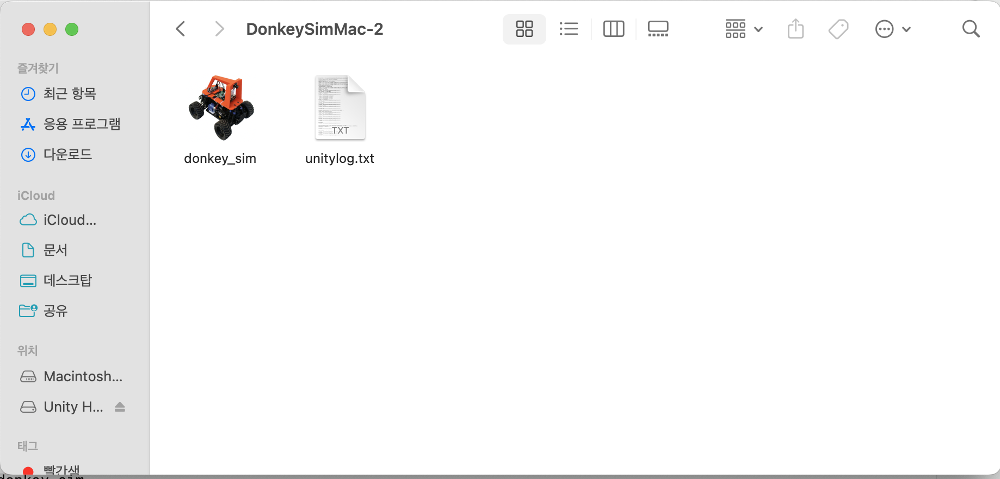
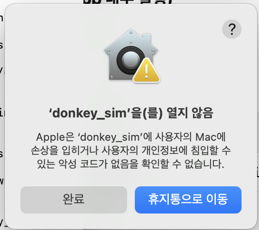

[DonkeyGym/01] mac m1 환경 설정
Donkey Gym이란
Donkey Gym은 오픈소스 자율주행 프로젝트인 Donkey Car를 위한 강화학습 시뮬레이터로 개발되었다. Unity 엔진을 기반으로 작동하며, Python에서 널리 사용되는 OpenAI Gym 스타일의 인터페이스를 사용해 강화학습 알고리즘과 쉽게 연동할 수 있다.
환경 설정 단계
2. 시뮬레이터 설치
바로가기에 링크되어 있는 환경을 다운로드 받으면 된다. 맥은 윈도우와 달리 다운받은 시뮬레이터를 .app 내부로 실행할 수 있도록 추가 설정이 필요하다. 만약 이 과정을 생략하고 시뮬레이터를 클릭한다면, 열 수 없는 앱이라는 오류가 발생한다.
.app 내부로 실행하기 위해서는 권한을 주어야 하고, 터미널에 아래 명령어를 입력해 설정할 수 있다.
cd {경로에 맞게 수정}/DonkeySimMac/donkey_sim.app/Contents/MacOS
chmod +x donkey_sim

위 이미지에서 보이는 donkey_sim 아이콘의 경로를 현재 위치로 받는 것이며, (option + command + C)로 손쉽게 실행할 수 있다.
unitylog는 donkey_sim을 유니티로 실행한 이후에 생성되며, 다운로드받았을 때 존재하는 파일은 아니다.
권한 설정이 완벽하게 되었으면 앱을 눌렀을 때 실행이 되어야 하는데, 아래와 같은 경고창이 뜨면서 앱이 열리지 않는다.

이는 맥 운영 체제 내 보안 기능 때문으로, 아주 간단하게 해결 가능하다.
- ‘휴지통으로 이동’을 누르지 말고, ‘완료’를 누른다.
- [시스템 설정] > [개인정보 및 보안]에서 아래로 내려가 경고창을 찾는다. ““donkey_sim”은(는) 차단되었습니다. 그래도 열 수 있습니다.” 문구가 뜨며, 이때 ‘그대로 열기’를 클릭하면 보안 기능을 성공적으로 우회할 수 있다.
3. 파이썬으로 시뮬레이터 테스트
깃허브에서 DonkeyGym을 다운받는다.
pip install git+https://github.com/tawnkramer/gym-donkeycar
아래 코드를 실행하면 100step동안 속도 0.5로 굴러가는 동키카 시뮬레이션을 볼 수 있다.
import os
import gym
import gym_donkeycar
import numpy as np
# 올바른 실행 파일 경로 (macOS용)
PATH_TO_APP = "{이전경로}/DonkeySimMac/donkey_sim.app/Contents/MacOS"
exe_path = f"{PATH_TO_APP}/donkey_sim"
port = 9091
conf = {
"exe_path": exe_path,
"port": port
}
# 시뮬레이터 자동 실행 + 환경 생성
env = gym.make("donkey-generated-track-v0", conf=conf)
# 차량 간단히 움직여보기
obs = env.reset()
for t in range(100):
action = np.array([0.0, 0.5]) # 조향 0, 속도 0.5
obs, reward, done, info = env.step(action)
if done:
break
env.close()